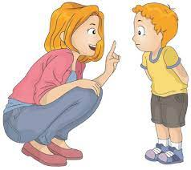
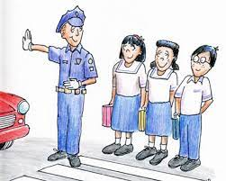
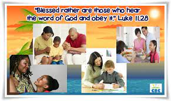

After doing all activities assigned, ask for your parents’ help in answering these questions. CLICK THE PICTURES BELOW EACH QUESTIONS.
Big Question:
What is obedience and why is it important?
Other Question:
1. Is there a need to follow your parents?
2. Why do you need to obey your parents?
3. How do you show obedience to your parents?
4. What are some ways you can show obedience at home and in school?
5. Do you think God will like it if we obey him, our parents, and teachers?
